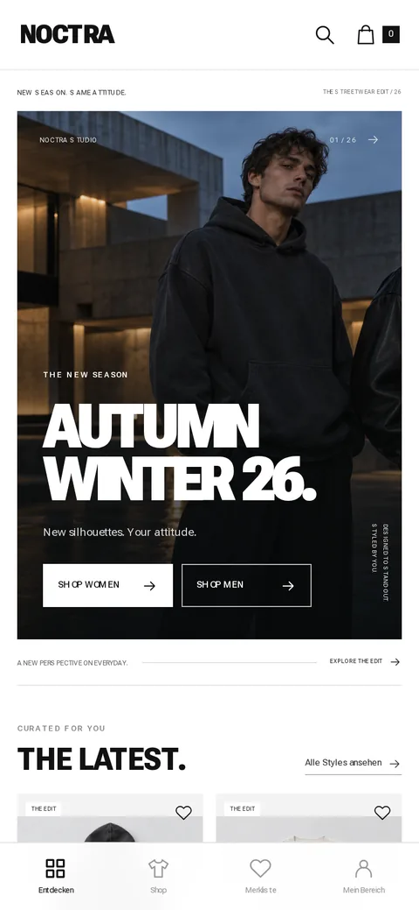

01Shop-App
NOCTRA · Streetwear-Shop
Ein Mode-Shop, der sich wie eine App anfühlt: stöbern, wischen, in den Warenkorb.

Die Idee: Shop für eine Streetwear-Marke: Pfeile blättern schon in der Übersicht durch Flatlay und Modelfotos, die Detailansicht zeigt Galerie und Größenwahl, dazu Suche, Filter, Merkliste und ein Checkout, der den Ablauf nur simuliert.
Designstil: Editorial und reduziert: Schwarz-Weiß, große Versalien in Roboto Flex, Kampagnenfoto im Vollformat, unten eine App-Navigation wie im nativen Shop.
Technik: Statisches HTML, CSS und JavaScript ohne Framework und ohne Build-Schritt, Merkliste und Warenkorb bleiben im Browser gespeichert, Abläufe mit Playwright getestet.
Zum Ausprobieren: Produkt antippen, Größe wählen, in den Warenkorb legen. Erfundene Marke mit Beispieldaten, keine echte Bestellung.
Live-Demo ansehen ↗ (öffnet in neuem Tab)